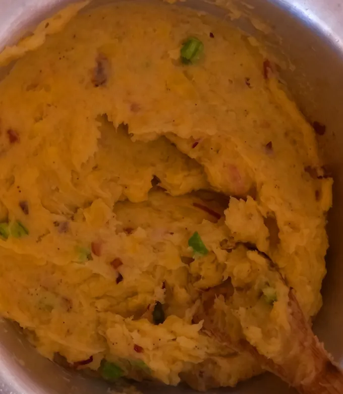

Mashed Matoke is a traditional East African dish made from ripe or green bananas, boiled until tender and mashed to a smooth, soft consistency. It is rich, hearty, and comforting, with a mild, naturally savoury flavour.
Often cooked with onions, tomatoes, and a touch of seasoning, it pairs perfectly with beef stew, chicken, or vegetables for a wholesome and satisfying meal.
4 Servings
Optional: Garlic, black pepper, and a little milk or butter for a creamier texture.
1 hr